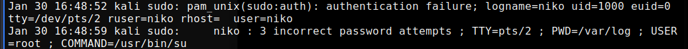

H2c
Tehtvänäni oli aiheuttaa lokiin kaksi tapahtumaa - yksi onnistunut ja yksi epäonnistunut tai kielletty
Ensimmäinen komento, jonka annoin oli päivitysten asentaminen komennolla sudo apt-get upgrade. Loki tiedosto löytyy polusta /var/log/apt/history.log. Päivitysten asennuksesta seuranneet lokimerkinnät:
Epäonnistuneen loki merkinnän aiheutin kirjoittamalla salasanan väärin kolmesti, yrittäessäni ottaa sudo oikeudet käyttöön. Auth.log näytti sen jälkeen seuraavalta:
